ADK
ADK
 Model Armor
Model Armor
 Python
Python

 Google Developer GroupBangkok · DevFest 2026
Google Developer GroupBangkok · DevFest 2026
Agenda
- 01From callbacks to pluginsWhy per-agent hooks break at scale
- 02Prebuilt & custom pluginsModel Armor, retries, BigQuery & BasePlugin
- 03Agent SkillsSKILL.md & progressive disclosure
- 04Enterprise architectureCombining plugins & skills across fleets
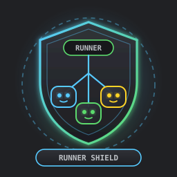
From callbacks
to plugins
Scaling cross-cutting hooks
across every agent in your app
Per-agent callbacks break down at 10+ agents
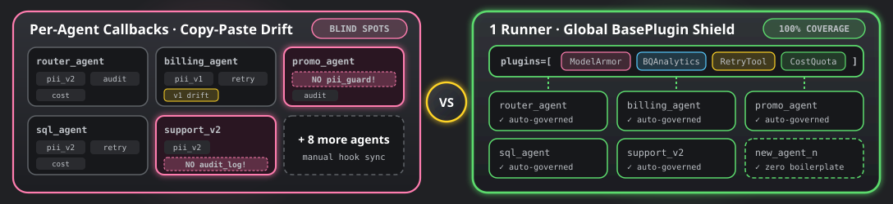
BasePlugin once on Runner / App — every existing & future agent is protected automatically.
before_model_callback becomes a production security hole.Callbacks vs. Plugins in ADK
| Dimension | Agent Callbacks | ADK Plugins (BasePlugin) |
|---|---|---|
| Scope | Single LlmAgent (or explicit list) | Every agent, model & tool in the Runner / App |
| Registration | Keyword args on each agent constructor | Registered once via plugins=[...] |
| Execution Priority | Runs after plugin hooks | Runs first — global policy always wins |
| Hook Surface | 8 hooks (agent, model, tool, error) | 12+ hooks (adds on_user_message, before/after_run, on_event) |
| Packaging | Standalone Python functions | Reusable, stateful classes with config & clients |
| Best For | Agent-specific formatting & local rules | Guardrails, audit logs, retries, cost & auth |
Plugins wrap every invocation, agent, model & tool
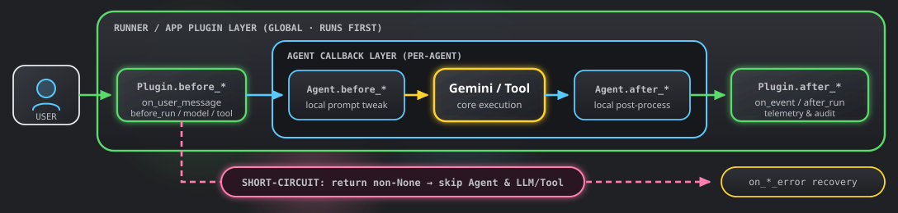
Runner Plugin Layer runs first
Agent Callbacks run only on None
Short-circuit blocks unsafe calls early
before_* returns an object, agent callbacks & the LLM/tool call are skipped.Two complementary axes of modularity in ADK
ADK Plugins · Horizontal Governance
Controls how every agent executes across the entire application.
Safety & PII
 Audit & Telemetry
Tool Retries
Context Filtering
Audit & Telemetry
Tool Retries
Context Filtering
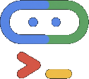
Agent Skills · Vertical Expertise
Teaches what an agent knows and loads instructions only when needed.
Helper Scripts
Domain Guides
Templates
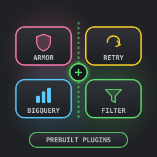
Prebuilt &
custom plugins
BasePlugin, Model Armor,
retries & BigQuery analytics
Subclass BasePlugin and register on the Runner
from google.adk.plugins.base_plugin import BasePlugin
from google.adk.runners import Runner
class ToolQuotaPlugin(BasePlugin):
def __init__(self, max_calls: int = 10):
super().__init__(name="tool_quota")
self.max_calls = max_calls
async def before_tool_callback(
self, *, tool, tool_args, tool_context
):
used = tool_context.state.get("temp:calls", 0)
if used >= self.max_calls:
return {"error": "Tool call quota exceeded"}
tool_context.state["temp:calls"] = used + 1
return None # allow tool execution
runner = Runner(
app_name="support_app",
agent=root_agent,
session_service=session_service,
plugins=[ToolQuotaPlugin(max_calls=5)],
)
1 · Unique name
name to super().__init__() for logs & debugging.2 · Same return rule
ReturnNone to continue; return a dict or LlmResponse to short-circuit.3 · Runner or App
Runner(plugins=[...]) or App(plugins=[...]) so every sub-agent inherits it.Production plugins ready out of the box
Model Armor Plugin
Screens prompts & responses against Google Cloud Model Armor templates for jailbreaks, PII, and malicious URLs.
Reflect & Retry Tool Plugin
Catches tool exceptions, injects structured reflection guidance, and lets Gemini self-correct arguments automatically.
BigQuery Analytics Plugin
Streams every invocation, LLM latency, token count, and tool call into BigQuery for audit trails, BI & evals.
Global Instructions & Context Filter
Applies org-wide rules to every LLM call and trims older turns to bound token cost and context noise.
Protect inputs & auto-recover failed tool calls
from google.adk.apps import App
from google.adk.plugins import (
ReflectAndRetryToolPlugin,
)
# Plus Model Armor plugin from ADK safety integration
app = App(
name="customer_portal",
root_agent=root_agent,
plugins=[
ModelArmorPlugin(
project_id="my-gcp-project",
location_id="us-central1",
template_id="enterprise-strict",
),
ReflectAndRetryToolPlugin(
max_retries=3,
throw_exception_if_retry_exceeded=False,
),
],
)
Model Armor
Reflect & Retry
Zero agent edits
root_agent or its sub-agents.
BigQuery telemetry, global rules & context trimming
BigQuery Agent Analytics
Non-blocking telemetry stream for every agent event:
- ✓Captures prompts, tool args, latency & tokens
- ✓Query cost by
user_id,agent_nameor team - ✓Export production traces straight into ADK eval sets
Global Instructions & Context Filter
Keep every LLM call compliant and affordable:
- ✓
GlobalInstructionPlugininjects legal & brand rules - ✓
ContextFilterPlugincaps history withnum_invocations_to_keep - ✓Prevents runaway token bills on long support chats
Order matters when composing multiple plugins
1 · Guardrails
ModelArmorPlugin
Block unsafe input first before spending tokens.
GlobalInstructionContextFilter
Shape & trim request.
3 · Resilience
ReflectAndRetry
Recover tool failures cleanly.
4 · Telemetry
BigQueryAnalytics
Observe & log without blocking.
None value stops subsequent plugins in that hook.try/except so a logging outage never breaks user traffic.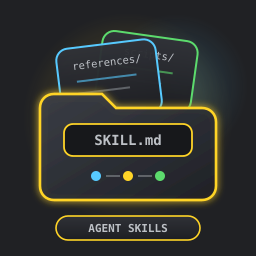
Agent
Skills
Modular domain expertise
with progressive disclosure
Stuffing every workflow into one system prompt fails
Token bloat
Paying for 15,000 tokens of SQL, deploy, and HR rules on every "hello" turn slows latency and inflates bills.
Instruction conflict
When 12 workflows live in one giant prompt, rules contradict each other and tool-calling accuracy drops.
Hard to share
Domain experts can't easily update an SOP without editing Python strings across multiple agent repos.
What is an Agent Skill? A self-contained folder
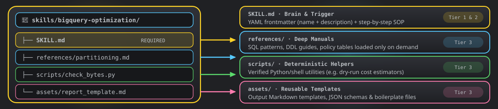
--- name: bigquery-optimization | description: Optimize SQL, partitioning & slot usage ---
Domain SOP
 Git-versioned
Git-versioned
agentskills.io format — plain Markdown + folders, versioned in Git.Load context in 3 tiers — pay only for what you use
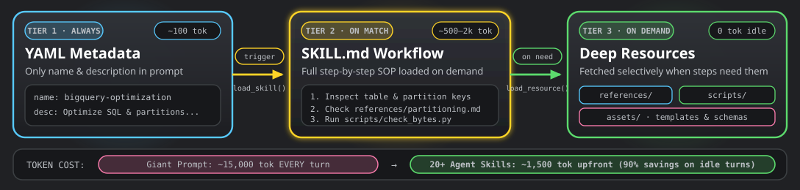
Tier 2: load_skill(name)
Tier 3: load_skill_resource()
Attach skills to any LlmAgent with SkillToolset
import pathlib
from google.adk.agents import LlmAgent
from google.adk.skills import load_skill_from_dir
from google.adk.tools import skill_toolset
skills_dir = pathlib.Path(__file__).parent / "skills"
my_skills = [
load_skill_from_dir(skills_dir / "bigquery-optimization"),
load_skill_from_dir(skills_dir / "incident-triage"),
]
ops_agent = LlmAgent(
name="cloud_ops_agent",
model="gemini-2.5-flash",
instruction="Assist engineers with GCP operations.",
tools=[skill_toolset.SkillToolset(skills=my_skills)],
)
Auto-wired tools
SkillToolset exposes list_skills, load_skill & load_skill_resource automatically.Clean instructions
instruction= short — domain SOPs live inside the skill folders, not Python strings.Inline or directory
load_skill_from_dir or construct Skill objects dynamically.Author a Skill once — use it at build time & runtime
Build Time · Developer Agents
Coding agents & agents-cli load skills to scaffold ADK projects, write evals, and deploy to Cloud Run or Agent Engine.
Runtime · Production Agents
Your deployed ADK agents mount the same SKILL.md packages via SkillToolset for domain workflows.
Cross-Team Portability
Data, Security, and Brand teams publish versioned skills that any Gemini-powered agent can adopt immediately.
SKILL.md standard bridges developer workflows and production agent behavior.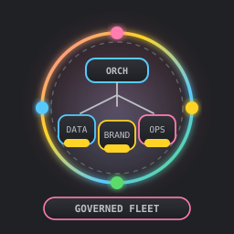
Enterprise
architecture
Combining plugins & skills
across multi-agent fleets
Plugins govern the fleet · Skills power each specialist
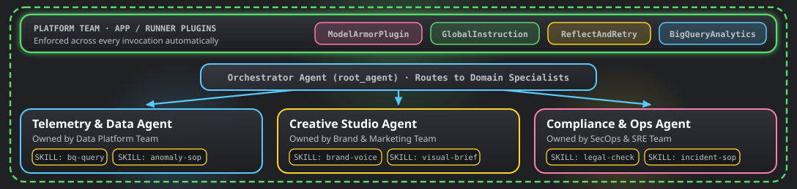
Model Armor
BigQuery Analytics
ADK Runner & SkillToolset
 Cloud Run / Agent Engine
Cloud Run / Agent Engine
Treat Skills like production software
1 · Version in Git
Keep skills in a shared repo with semantic tags (v1.2.0) and CODEOWNERS review per domain team.
Test Tier 1 description recall & precision: does the right skill load on target queries and stay quiet otherwise?
3 · Ship Safely
Package read-only skill folders into containers/artifacts. Enforce runtime boundaries with ADK Plugins.
description is the #1 bug in Agent Skills — test triggering in CI just like unit tests.Best practices for Plugins & Skills
ADK Plugins
- ✓Order deliberately: Security first, context next, retries, then telemetry.
- ✓Stay async & fast: Hooks run inline — never block the event loop.
- ✓Isolate failures: Catch plugin errors so telemetry never crashes agents.
- !Don't hide domain logic in global plugins — move it to Skills or agents.
Agent Skills
- ✓Crisp triggers: State clearly when to use — and when not to use — a skill.
- ✓Keep
SKILL.mdlean: Push deep tables & schemas intoreferences/. - ✓Avoid overlap: Distinct skill scopes prevent agent confusion.
- !Don't trust skill scripts blindly — pair with sandbox & plugin guardrails.
Modularize, Enforce, Reuse
1 · Modularize
Package domain workflows into Agent Skills (SKILL.md) and load context progressively on demand.
2 · Enforce
Register Plugins once on the Runner / App so Model Armor, retries & audit cover every agent.
3 · Reuse
Version and share vetted plugins & skills across teams — scale to 10+ agents without drift.
ReflectAndRetryToolPlugin to your Runner and extract your longest prompt section into a SKILL.md.Read more and try it
ADK Plugins
adk.dev/plugins/ADK Agent Skills
adk.dev/skills/ADK Callbacks
adk.dev/callbacks/Safety & Model Armor
adk.dev/safety/Google Codelabs · ADK Skills
codelabs.developers.google.comAgent Skills Open Standard
agentskills.ioThank you
Q & A
Punsiri Boonyakiat
Google Developer Expert in Cloud AI
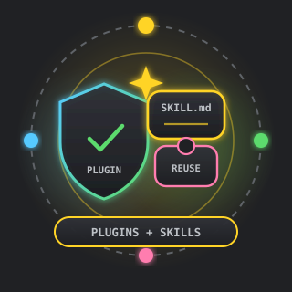